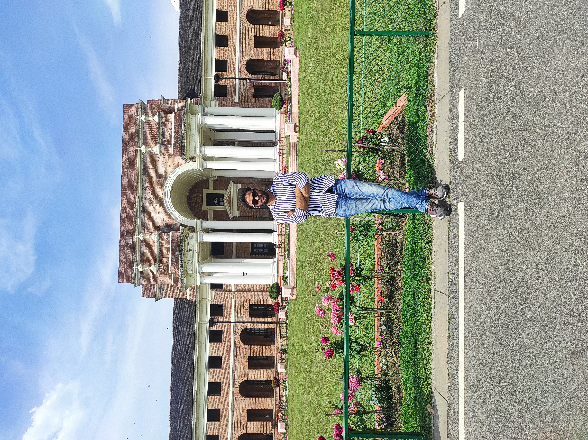

Dharmendra PrajapatPhD Candidate
Department of Computer Science and Engineering, |
 |
 Github
Github Twitter
TwitterHi! I am a PhD Research Scholar at Indian Institute of Technology, Roorkee and a member of Data Mining Research Lab. I am advised by Prof. Durga Toshniwal. I did my research internship at Samsung R&D Institute, Banglore (SRIB), India where I worked in Big Data Group and I was mentored by Dr. Rajasekhara reddy Duvvuru Muni .
Prior to that, I did MTech in Intelligent Systems from Indian Institute of Information Technology, Allahabad, Prayagraj, India in 2019 and BTech in Computer Science and Engineering from University College of Engineering and Technology, Bikaner India in 2016.
Research
I have research interests in Natural Language Processing (NLP), Conversational AI, and Recommendation Systems including but not limited to the following topics:
- Multi-domain Task-oriented Dialogue System. My resreach work is dedidated towards fine-tuning large language model for completing the user's task where a dialogue between user and system is task-oriented and can belongs to multiple domains
- Reinforcement Learning in TOD systems. My research work is also focused on using reinforcement learing techniques for steering LLMs towards an specific task.
😀 I am open to collaborations and discussions. Please feel free to reach out to me if you are interested in my research or any relevant topics.
Publications
2024 - Present
Improving multi-domain task-oriented dialogue system with offline reinforcement learning
Dharmendra Prajapat,Durga Toshniwal.
2024 IEEE International Conference on Big Data (BigData).
[paper]-
Scalable Task-Oriented Dialogue Systems with Mixture of Experts and Offline Reinforcement Learning
Dharmendra Prajapat,Durga Toshniwal.
2025 IEEE International Conference on Big Data (BigData).
[paper]
Experiences
- 2019/12 - 2020/12: Junior Research Fellow at Indian Institute of Technology, Jodhpur, India
- 2023/07 - 2024/01: Research intern at Samsung R&D Institute, Bangalore, India
Professional Activities
Teaching Assistant
- CST 102: Linux Programming, Autumn 2024 | IIT-R
- CSN 212: Design and Analysis of Algorithms, Spring 2024 | IIT-R
- CSN 503: Advanced Computer Networks, Autumn 2022| IIT-R
- CSN 515: Data Mining & Warehousing, Spring 2022 | IIT-R
- DST 232: Data Structures, Spring 2019 | IIIT-A
- ITP 102: Introduction to Programming, Autumn 2018 | IIIT-A
Misc.
-
I enjoy sports, especially Football, Cricket and Badminton. I also spend my leisure time on movies.